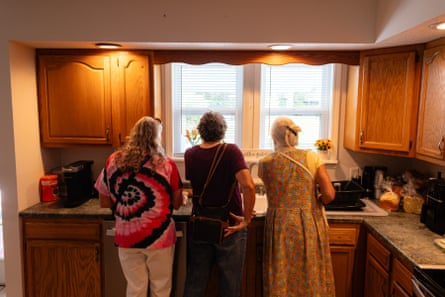
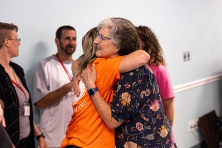

I n the spotless kitchen of a white clapboard house in the Appalachian mountains, a retired deacon, a regional jail counsellor and I form an impromptu book club. The novel under discussion is Barbara Kingsolver’s bestselling, Pulitzer prize-winning Demon Copperhead , which is set in this area, Lee County, Virginia, during the 1990s, at the beginning of the opioid epidemic. I say that I loved the novel, that it was vivid and brilliant, heart-warming and tragic. Their reaction is more complex – there’s a real sadness behind it. Julie Montgomery-Barber, the jail counsellor, tells me she found the book “hard to read”. The Rev Nancy Hobbs agrees that reading it was painful, “because I felt like: I knew these people. At every level, from foster care to the football coaches to Demon. I knew Demon.”
Hobbs and Montgomery-Barber sit on the board of Higher Ground, the recovery residence recently established by Kingsolver using royalties from the novel. We are viewing the house together as part of its official launch party, on a sunny Saturday in June. The house is a bright and welcoming space. It provides a safe place to live for women whose lives have been torn apart by addiction, who are seeking long-term recovery. Some of its residents have come directly from prison; one was living in a tent before she moved in; current ages range from 33 to 65 years old. Higher Ground gives residents a roof over their heads and supports them in myriad ways, from transport to AA appointments (most have lost their driving licences), to access to education and help with finding employment. The women can stay for between six months and two years. It opened in January and will be at full capacity later this month, when its eighth resident arrives, though there are plans for expansion.
It is the first such residence for women in the county, explains Joie Cantrell, a public health nurse and the board’s co-director. She is, she says, “ecstatic” to be part of the project. So often, when people recover from addiction, they are sent “right back into the same situation. We were setting them up for failure.” Not here, says resident Syara Parsell, 35, who came to Lee County from prison in 2019. Born and raised in Connecticut, her mother drove her over here, she says, in the hope that the change of location would help her overcome a heroin addiction. Instead, she “started getting high in this town”, and was incarcerated again. She found Higher Ground when she was discharged in February and will be six months sober this month. Thanks to the house, she says, “my life has changed. My mentality has changed. I am truly sober.” She believes Higher Ground will give hope to others in active addiction nearby. They can see that “it gets better – and I would have never said that. I’ve been at some low points. I never thought I could do this.”
‘My mentality has changed. I am truly sober’ … women at the Higher Ground women’s recovery centre.Photograph: Shawn Poynter
The launch event includes an afternoon of free Appalachian food and music in the nearby Pennington Gap Community Center, where Kingsolver stands beaming, with her husband Steven at her side, hugging guests and posing for pictures. Later, that evening, she takes to the stage of Lee theatre, an attractive mid-century playhouse next door, and ushers the centre’s staff and board members on stage to rapturous applause. Then, with spotlights illuminating the distinctive streak of white in her hair, she tells a largely local audience why she set her story here, in Lee County, the former coal mining region ravaged by addiction after Purdue Pharma flooded the area with its supposedly non-addictive new wonder drug, OxyContin, in the 1990s.
Kingsolver, who grew up in the foothills of the Appalachians, tells the audience that the area’s struggles “are things we are supposed to be ashamed of – but they are not our fault”. Rather, she says, they are the legacy of “big companies who came here to take something away”. First that was timber, then coal, “then they came to harvest our pain”. It’s a rousing speech which turns emotional when she interviews some residents on stage. Nikki is now studying for her GED (the equivalent of a high school diploma) and says she feels, for the first time, as though she has kin. “I really got to know the girls in the house, and when you don’t have a family, and you really get close to them, that’s your new family.”
I meet Kingsolver the next day at her hotel, a 40-minute drive along open roads in the green mountains, past clapboard houses with US flags on their porches, churches with white steeples, corrugated iron side-of-road shops and cows chewing the cud on hillside farms. She wears a patterned red top and bootcut jeans, and is still in high spirits from the previous evening, telling me proudly, “There wasn’t a dry eye in the house!” That it has all come together is “amazing”, she says. She could not have imagined any of this happening when she was writing the novel, a retelling of Charles Dickens’s David Copperfield. “I didn’t have any idea Demon would bring home so much bacon,” she says. “I never presume success. I write about things that can make people uncomfortable, that ask them to examine their prejudices and think about the world in a new way. I never assume that’s going to be marketable.”
Kingsolver has been a towering figure in American culture for decades, author of acclaimed novels including The Poisonwood Bible, her 1998 epic about a family of American missionaries in the Belgian Congo, and The Lacuna, for which she won the 2010 Women’s prize for fiction. She has frequently written about the Appalachian region which, she says, is the only place that feels like home. She grew up in rural Kentucky, and, after a stint as a journalist in Arizona, has spent most of her adult life on a farm in Washington County, southwest Virginia. Her longstanding literary preoccupations – nature and the web of relationships between people and systems – derive from growing up “around wildness and woodlands”, and from living in a rural community, through which she became aware of “the interconnectedness of our every ambition and accomplishment”.
Rural life and the opioid crisis have not been sufficiently represented in fiction, she says. “Appalachian life in general has not been sufficiently represented. People don’t know the complexity and the nuance.” Appalachians represent “ecosystems of people, the people in need and the people who give; the Memaws (grandmothers) who take care of all the kids.” She dismisses one infamous account – vice president JD Vance’s 2016 memoir Hillbilly Elegy – as a book that was “really all about himself, how he got out and made good, and the people that stay behind, well, are just lazy”. Appalachian culture, she says, is about modesty and self-reliance. “If he were a real Appalachian, he wouldn’t tell that story.”
Fittingly, then, she says it was Demon’s voice that made the novel so compelling to many, and “I thank Mr Dickens for that. My hesitation with this book, and the trouble I had getting started with it for years, was the stereotypes I was working against. People have ideas about Appalachians, and they have ideas about what so-called addicts are like. By telling the story from the point of view of an orphaned child, readers are immediately sympathetic.” It helps that Demon is so loveable: “He has moxie, he’s so funny. So mad and profane, but he has such a good heart. People want to adopt him.”
Barbara Kingsolver meets volunteers from a Tennessee recovery centre during a celebration for the opening of Higher Ground.Photograph: Shawn Poynter
Even by Kingsolver’s standards, Demon Copperhead’s success was “of a different magnitude”. As well as the Pulitzer, she became the only woman to win the Women’s prize twice. Her sales were in a “new stratosphere”. She tells me she has given much of her income away for years. “Material success came gradually. So I had time to learn how to draw a cap on what we need as a family and what we can do with the rest.” So, when “that first royalty cheque came in and our eyes all popped wide open, I thought: ‘I could do something significant with this.’”
After learning from local residents about the desperate need for recovery residences, she bought a building and set about assembling a local team. Many Lee County locals have become deeply involved, from the community college offering one resident free electrical and carpentry training to the centre’s 83-year-old neighbour Larry, who “just kind of adopted these ladies”, as Kingsolver puts it, and frequently gives them lifts to appointments. Community involvement is crucial, she says. “Charity is a very loaded concept. It involves a power imbalance. It is a person standing in a position of privilege saying: I will give this gift to you, and implicit is: ‘to help you become more like me’. Everything about that is odious to me.”
For all the successes, of both the centre and the book, there has been some local pushback. “Initially, and maybe still, specifically in Lee County, some people felt like: ‘ Why did you have to name us?’ Nobody told me to my face, but I heard other people sort of sniping about it. I think it’s pride. Very privileged people who would really rather not think about their neighbours who are struggling and suffering.”
One such naysayer made his opinion clear when Kingsolver tried to donate a set of books to Lee County High School, Demon’s alma mater, at the request of an English teacher. “Between opening the trunk of the car and getting the books to the classroom, they mysteriously vanished,” she says. After some investigation Kingsolver appealed to the school board, telling them how “life-changing” she would have found it, as a girl in Kentucky, to have read a novel written nearby. The books miraculously reappeared in the principal’s office. She is convinced that the perpetrator had not read the book but “had a sense that it was set in Lee County and it talked about bad things. We can’t have people knowing that bad stuff happens here. You know, that wonderful denial that keeps people afloat.”
Pride, denial and shame are longstanding Kingsolver fascinations. She says that the archetypal American story of the lone hero pulling themselves up by their bootstraps “is just bullshit. We have classes in this country. We have class barriers. There are places you can be born that you’re never going to get out of.” Still, she says, that myth is powerful: it “brainwashes” people; it can lead to self-blame. Shame, she believes, is intrinsic to Trump’s success, something she explores in one memorable Demon Copperhead passage addressing the word “deplorable”, a reference to Hillary Clinton’s infamous description of Trump voters as a “basket of deplorables”.
“I spent more worry on that word than perhaps any other single word in the book,” she says. “I took it out, put it back in because, I mean, I love Hillary. I voted for her. I think it was so unfair that one sentence was taken out of context. But, also, there are people in my neighbourhood driving around with trucks that say: ‘I’m a deplorable.’ It has become so easy for urban people to dismiss all of rural America, to paint us all with the brush of backward, dumb – that was toxic. I’m sure she read this book, and I’m sure she didn’t like that I used that word, but I didn’t mean it personally. It’s just awfully important to get it across that, as Demon says, we have cable. We know what you’re saying about us – and we’re mad about it.”
Trump understands this, she says. He’s the guy who says: “I’m not like them. I’m not a fancy educated guy. I’m one of you. That’s what appealed to people. Shame is such a part of this. He got under people’s sense of shame and found other places to put it.” She lives in Trump country, and says she understands how he “hooked” so many people, but she never demonises Trump voters herself, describing her neighbours as “some of the most generous, kindhearted people you will ever meet”. She has no kind words for the man himself. His presidency is, she says, “a circus. That’s too kind a word for it. Circuses make you laugh. This one makes you cry. It’s stunning how much damage one ignorant man can do.”
She points out that Trump’s “so-called Big Beautiful Bill” could be devastating for the region, with its cuts to the National Park Service, the Weather Service and disaster preparedness – just last year the area was hit by the devastating Hurricane Helene – and cuts to Medicaid, which could cause havoc in an already under-served area. “The damage will be unimaginable. Lots of people will die, lots of wild lands will be destroyed. The damage is terrifying.” Does she think her Trump-voting neighbours will change their allegiance if such terrors come to pass? “Will they connect the dots when our hospital closes? I don’t even know the answer to that,” she says, shaking her head, fearing that the TV and radio stations that told them to vote for Trump in the first place will “come up with some other reason why your hospital closed. For those of us who are in the information business, that’s a depressing subject.”
She writes to her Republican congressman every other day to say: “You studied history. You know better than this. Come on!” She is seethingly angry with the administration “because the Congress people do know the law. Pretty much all of them come from wealthy backgrounds. They know what all this means, and they’re not standing up to him. I just want them to grow a spine.” She is not thrilled with the Democrats, either. “I’m very critical of both political parties in this country in terms of how beholden they are to corporate interests. Corporations run this country. It’s really just a question of how much or how little they are willing to spare for the public good. A lot of us have been reading about late capitalism for a long time, and now we’re seeing it.”
In the long term, she says she believes in the Martin Luther King Jr quote that “the arc of the moral universe is long, but it bends toward justice”. Until we start to see that bend, good news comes locally, at least: Higher Ground is already growing, she tells me, with the acquisition of a neighbouring building, which the women will run as a thrift shop. She hopes that the project will expand further, will help more people. She plans to be involved for the long run and hopes to do whatever she can to help in “destigmatising this disease and bringing the community into the project of supporting our lost citizens”. She is also currently adapting one of her books – she can’t say which – for film and is in the middle of writing a new novel.
Meanwhile, Demon lives on. His spirit is in the recovery house, whose residents Kingsolver describes as “the mothers of real-life Demon Copperheads”. Unlike their fictional counterpart, these women have hope of getting back on their feet, thanks to a house paid for, in large part, by book lovers – many of whom have continued contributing. When Kingsolver announced the initiative on her Instagram page, her 150,000 followers donated more than $50,000 in cash in a week, and purchased reams of items from an Amazon wish list. The house’s patio seating was gifted by a book club in Switzerland. Demon also lives on in readers’ brains. “Readers still ask me: ‘Did he get his happy ending?’ I tell them: ‘He’s yours. Now, you get to imagine whatever happy ending you like for him.’”
Faber has reissued Barbara Kingsolver’s titles The Lacuna, Flight Behaviour and The Poisonwood Bible this summer; for more information on Higher Ground see hgwrr.org